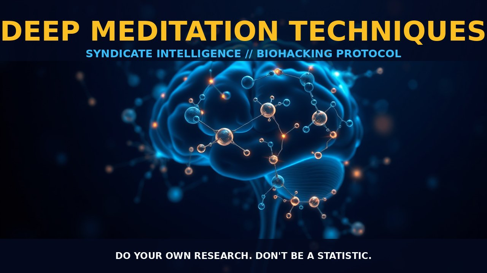

DEEP MEDITATION TECHNIQUES

MASTERING DEEP MEDITATION TECHNIQUES FOR ENHANCED CONSCIOUSNESS
THE MECHANICS
DEEP MEDITATION IS MORE THAN JUST AN ALTERED STATE OF CONSCIOUSNESS; IT'S A NEUROPHYSIOLOGICAL SYMPHONY THAT BRINGS THE BODY AND MIND INTO HARMONY THROUGH THE ACTIVATION OF PARASYMPATHETIC PATHWAYS. THIS SYMPHONY CAN BE CONDUCTED BY VARIOUS TECHNIQUES SUCH AS MINDFULNESS, PROGRESSIVE MUSCLE RELAXATION, OR FOCUSED BREATHING EXERCISES WHICH TARGET NEURAL CIRCUITS FOR ATTENTION AND COGNITIVE CONTROL.
BIOLOGICAL LEVERAGE
FROM A BIOLOGICAL PERSPECTIVE, DEEP MEDITATION EMPLOYS MULTIPLE STRATEGIES TO ACHIEVE ITS PROFOUND EFFECTS: THE DEFAULT MODE NETWORK, THE BRAIN'S SELF-REFLECTION HIGHWAY, GETS DIALED DOWN. NEUROTRANSMITTERS SUCH AS SEROTONIN AND GABA ARE RELEASED, CALMING THE MIND AND REDUCING ANXIETY. FLOW OF BLOOD TO AREAS ASSOCIATED WITH DAYDREAMING DECREASES, PROMOTING MENTAL STILLNESS. LONG-TERM PRACTICE CAN RESHAPE YOUR BRAIN PHYSICALLY, INCREASING PREFRONTAL GREY MATTER. THESE MECHANISMS COMBINE TO SILENCE INTERNAL CHATTER AND ELEVATE AWARENESS. BY FINE-TUNING THESE PATHWAYS, PRACTITIONERS ACCESS DEEP RELAXATION AND MENTAL CLARITY—SETTING THE STAGE FOR SUCCESSFUL ASTRAL PROJECTION OR MINDFUL LIVING.
TACTICAL IMPLEMENTATION
TO MAKE THE MOST OF YOUR MEDITATION: START WITH GROUNDING TECHNIQUES SUCH AS 4-7-8 BREATHING TO ANCHOR YOURSELF. INCORPORATE BODY SCANNING EXERCISES, SYSTEMATICALLY RELAXING EACH MUSCLE GROUP. USE MANTRAS OR ISOMETRIC CONTRACTIONS TO KEEP FOCUS DURING MOMENTS OF DISTRACTION. BEGIN WITH SHORT SESSIONS AND GRADUALLY INCREASE DURATION AND FREQUENCY. STACKING AND DOSAGE CONSIDER ENHANCING YOUR MEDITATION WITH COMPLEMENTARY PRACTICES: YOGA FOR A DEEPER RELAXATION RESPONSE AND HEIGHTENED PHYSICAL AWARENESS. NOOTROPICS LIKE L-THEANINE OR PIRACETAM CAN PROVIDE COGNITIVE SUPPORT DURING PRACTICE. INITIATE WITH CONSERVATIVE TIMING: 10-20 MINUTES, TWICE WEEKLY. ADJUST BASED ON PERSONAL TOLERANCE AND DESIRED OUTCOMES, KEEPING AN EYE OUT FOR ANY ADVERSE REACTIONS. DO YOUR OWN RESEARCH. DON'T BE A STATISTIC.
PROSTAR LIFE HACK
Always verify protocol biological leverage with baseline biometric tracking. Data is sovereignty.
[ AUTHOR: LEAD TECHNICAL RESEARCHER ]